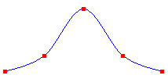
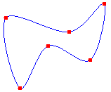
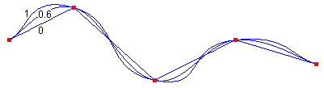

A cardinal spline is a curve that passes smoothly through a given set of points. To draw a cardinal spline, create a Graphics object and pass the address of an array of points to the Graphics::DrawCurve method. The following example draws a bell-shaped cardinal spline that passes through five designated points:
Point points[] = {Point(0, 100),
Point(50, 80),
Point(100, 20),
Point(150, 80),
Point(200, 100)};
Pen pen(Color(255, 0, 0, 255));
graphics.DrawCurve(&pen, points, 5);
The following illustration shows the curve and five points.

You can use the Graphics::DrawClosedCurve method of the Graphics class to draw a closed cardinal spline. In a closed cardinal spline, the curve continues through the last point in the array and connects with the first point in the array.
The following example draws a closed cardinal spline that passes through six designated points.
Point points[] = {Point(60, 60),
Point(150, 80),
Point(200, 40),
Point(180, 120),
Point(120, 100),
Point(80, 160)};
Pen pen(Color(255, 0, 0, 255));
graphics.DrawClosedCurve(&pen, points, 6);
The following illustration shows the closed spline along with the six points:

You can change the way a cardinal spline bends by passing a tension argument to the Graphics::DrawCurve method. The following example draws three cardinal splines that pass through the same set of points:
Point points[] = {Point(20, 50),
Point(100, 10),
Point(200, 100),
Point(300, 50),
Point(400, 80)};
Pen pen(Color(255, 0, 0, 255));
graphics.DrawCurve(&pen, points, 5, 0.0f); // tension 0.0
graphics.DrawCurve(&pen, points, 5, 0.6f); // tension 0.6
graphics.DrawCurve(&pen, points, 5, 1.0f); // tension 1.0
The following illustration shows the three splines along with their tension values. Note that when the tension is 0, the points are connected by straight lines.

Â
Â